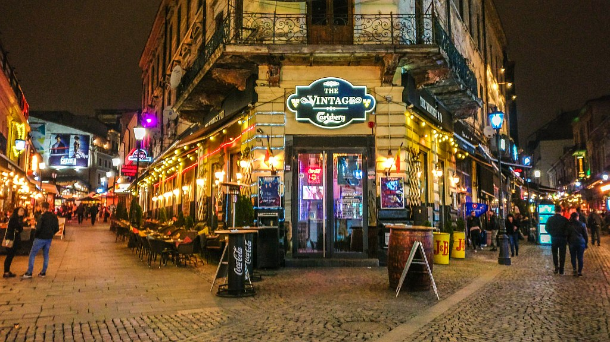
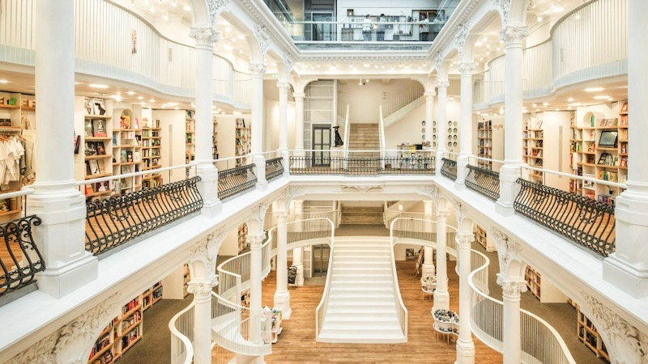
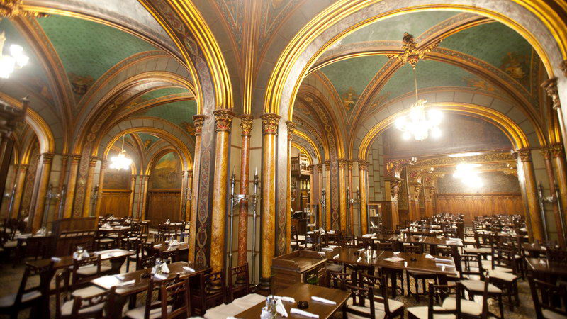
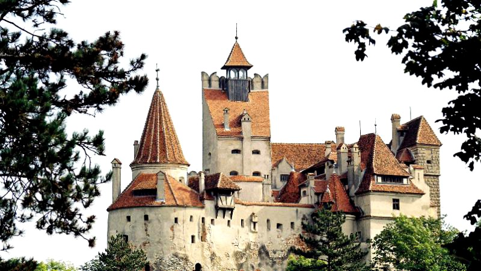

Learn about the Old Town!
Bucharest's heart~
Cool locations:
Bucharest's Old Town Center
The Old Town is one of Bucharest's earliest settlements, where structures date back to the 15th and 16th centuries. Over the centuries, it has been the seat of Romanian princes, a center for trade, a place to worship, and a crossroads for travelers. It also managed to survive Ceausescu's 1980s razing of one fifth of the city to build his vision of a new Socialist capital. After spending decades as a slum, much of the Old Town has been gentrified and renovated since the fall of communism.
Yet while many historic buildings have been gallantly restored, still other properties await their facelift. This contrast gives that much more charm to the Old Town's pedestrian lanes and cobbled streets lined with bookshops, theaters, restaurants, and cafés.
Popular things to do here include visiting Curtea Veche, an open-air museum built on the site of the Old Princely Court, once home to Vlad the Impaler, and the National Museum of Romanian History with its fine collections of religious and royal treasures.
The old town is located with the Bulevardul Bratianu to the east, Regina Elisabeta to the north, the city river Dambovita on the south side and Calea Victoriei to the west. What to see in Bucharest old town you wonder? Don’t let yourself be fooled by the fact that it covers a rather small area, there is plenty of things to do and see in Bucharests old town.
Underneath the entire area of the Old Town there are vaulted caves and cellars of former inns, shops and houses, as well as communicating hiding places and refuge passages. Part of the vaulted caves of the disappeared Serban Voda Inn were uncovered and you can see them in front of the National Bank Palace on Lipscani Street.
Must see:
Carturesti Carusel
Carturesti Carusel has been pictured all over Instagram the last year or so and has been said to be one of the most beautiful bookshops in the world. Located in the old town, it's a place not to miss out on when you’re visiting Bucharest.
Caru' cu Bere
Step into Bucharest's oldest brewery, if not for a beer, grab the opportunity to try some local food or desert between the brewery’s historic walls. When there, do dont forget to look upon the facade on the beautiful carvings!
Dracula building
When you go to Romania and visit Bucharest, definitely take the time to get to know the story of Vlad a bit better. It is, if possible, even more, interesting then the fictional Dracula story, even though he was the inspiration for it.
